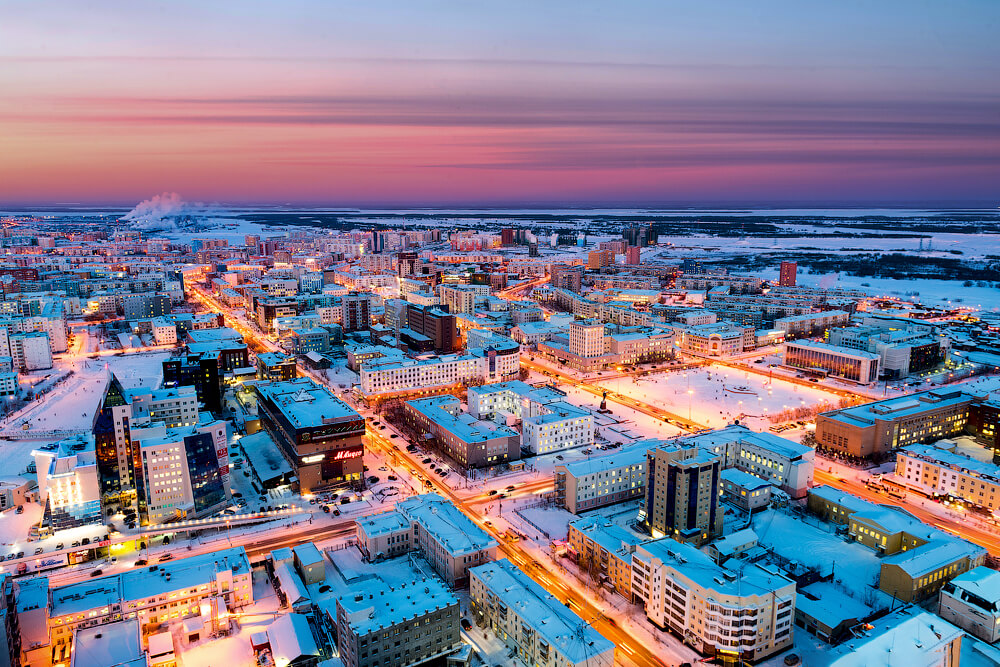
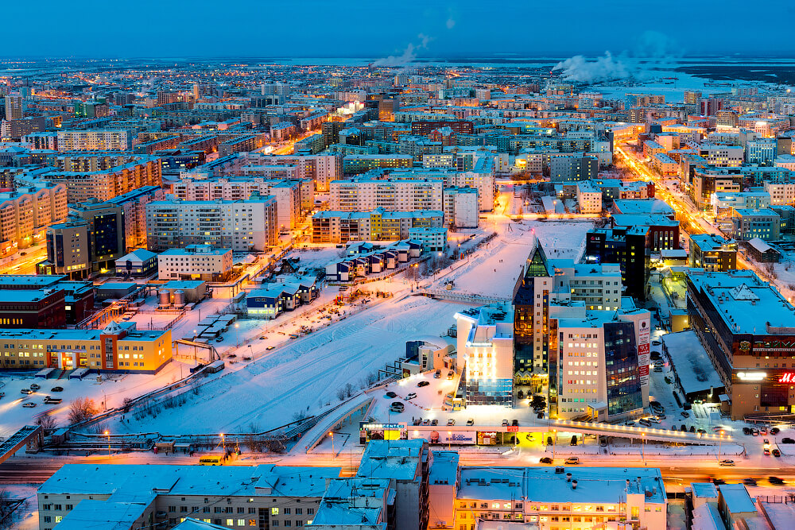

Город Якутск является крупнейшим городом, находящимся в зоне вечной мерзлоты. Его площадь равняется 3600 кв.км. Численность населения здесь топчется вокруг цифры 300 тысяч человек, что примерно равно 30 процентам жителей республики. Местные жители поговаривают, что если четко и внимательно пересчитать горожан, а так же жителей ближайших деревень, территориально считающихся уже городом, то под все 320-330 тысяч человек будет.
Якутск – это крупнейший город на северо-востоке России, третий по численности населения на Дальнем Востоке в принципе. По большому счету он – это единственное поселение в республике Саха (Якутия), которое хочется назвать городом. Нерюнгри, Алдан, Мирный и прочие получили такой статус «на вырост», вот только с развалом советской власти кажется, что этот вырост никогда не настанет. И дело совсем не в том, что «плохое начальство запустило Якутию», просто невыгодно здесь строить, невыгодно и неудобно жить, некомфортно работать. Если бы не алмазы и угольный разрез, откуда добывают газ и уголь, то тут никогда не ступила бы нога человека, не считая, разумеется, ноги коренных жителей – якутов.
Климат в Якутске такой, что плевок реально может замерзнуть на морозе. Минимальная температура здесь совпадает с полюсом холода – Оймяконом. Человеку, родившемуся и выросшему на юге, в Якутии вообще делать нечего. Хотя летом погода бывает очень теплой. Якутов не удивить температурой под сорок градусов выше нуля.
Зимой температура может опуститься до -60°С, а летом дойти до +40°С. Таким образом, годовая разница температур в городе превышает 100 °С – и это еще один климатический рекорд Якутска.
Среднегодовая температура воздуха составляет -10,2°С. Самый холодный месяц - январь. Его среднемесячная температура составляет -43°С, но отклонения бывают значительные. Рекордные холода были зафиксированы в январе 1951 года, когда показатели термометров достигли отметки –64,4 °С. Июль - самый теплый месяц года. Его средняя температура +19°С. Туманы бывают влажными, смешанными, зимой – кристаллическими (морозными). Среднегодовая скорость ветра составляет 2,5 м/сек. Количество осадков незначительное - в среднем 205 мм за год. Мощность снежного покрова – 30 см. Относительная влажность невысокая - в среднем за год 60%.
Якутск отличается большим количеством озёр в черте города. Одно из самых известных и популярных — Талое озеро в центре Якутска. Здесь всегда многолюдно (вокруг озера расположены киноцентр, бассейн, спортивный и торговый комплексы, а также подаренная городу известной моделью и филантропом Натальей Водяновой детская площадка «Обнаженные сердца»). На середине моста через Талое озеро расположен «Памятник карасю»: якутяне любят эту промысловую рыбу, она спасла многих горожан в голодные годы Великой Отечественной войны.
По легенде в древние времена на берегу Талого озера жил некий богатый человек, у которого была дочь Талаай. Девушку пытались насильно выдать замуж, и она утопилась от отчаяния. Сегодня на Талом озере проводят время более весело — на замёрзшей поверхности устраивают большой естественный каток.

Город Якутск расположен на вечной мерзлоте в среднем течении реки Лены, на ее западном берегу. Это одна из крупнейших рек на планете, ее протяженность – более 4 400 км.
До Полярного круга от Якутска по сибирским меркам рукой подать – 450 км. А до побережья Северного Ледовитого океана около 1000 км.
ВВЕРХ